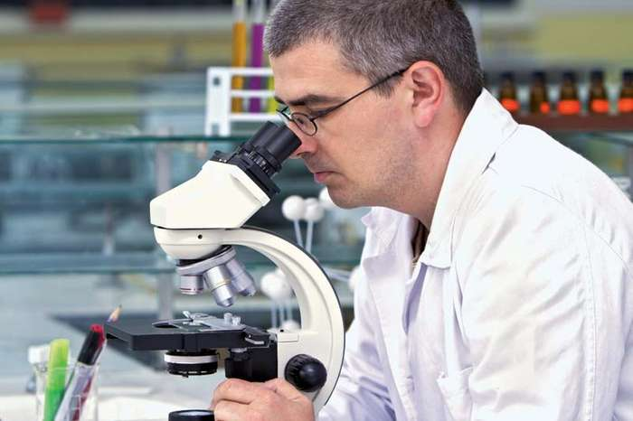

Biology, study of living things and their vital processes. The field deals with all the physicochemical aspects of life. The modern tendency toward cross-disciplinary research and the unification of scientific knowledge and investigation from different fields has resulted in significant overlap of the field of biology with other scientific disciplines. Modern principles of other fields—chemistry, medicine, and physics, for example—are integrated with those of biology in areas such as biochemistry, biomedicine, and biophysics.
Biology is subdivided into separate branches for convenience of study, though all the subdivisions are interrelated by basic principles. Thus, while it is custom to separate the study of plants (botany) from that of animals (zoology), and the study of the structure of organisms (morphology) from that of function (physiology), all living things share in common certain biological phenomena—for example, various means of reproduction, cell division, and the transmission of genetic material.
Branches of Biology for study
Biology is often approached on the basis of levels that deal with fundamental units of life. At the level of molecular biology, for example, life is regarded as a manifestation of chemical and energy transformations that occur among the many chemical constituents that compose an organism. As a result of the development of increasingly powerful and precise laboratory instruments and techniques, it is possible to understand and define with high precision and accuracy not only the ultimate physiochemical organization (ultrastructure) of the molecules in living matter but also the way living matter reproduces at the molecular level. Especially crucial to those advances was the rise of genomics in the late 20th and early 21st centuries.
Cell biology is the study of cells—the fundamental units of structure and function in living organisms. Cells were first observed in the 17th century, when the compound microscope was invented. Before that time, the individual organism was studied as a whole in a field known as organismic biology; that area of research remains an important component of the biological sciences. Population biology deals with groups or populations of organisms that inhabit a given area or region. Included at that level are studies of the roles that specific kinds of plants and animals play in the complex and self-perpetuating interrelationships that exist between the living and the nonliving world, as well as studies of the built-in controls that maintain those relationships naturally. Those broadly based levels—molecules, cells, whole organisms, and populations—may be further subdivided for study, giving rise to specializations such as morphology, taxonomy, biophysics, biochemistry, genetics, epigenetics, and ecology. A field of biology may be especially concerned with the investigation of one kind of living thing—for example, the study of birds in ornithology, the study of fishes in ichthyology, or the study of microorganisms in microbiology.